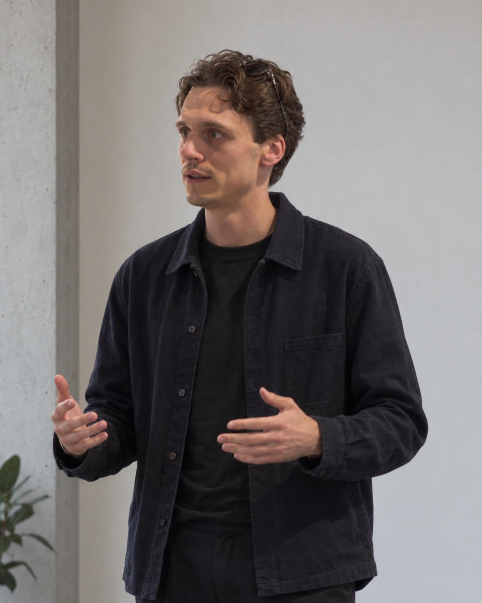

Architektur · BIM · Data Science
Paul Schlegel
Architekt mit Schwerpunkt BIM & 3D-Laserscanning, aktuell in der Umschulung zum Data Scientist. Ich verbinde präzise Vermessungs- und Gebäudedaten mit computergestützten Methoden — von IFC-Modellen bis zu Machine-Learning-Pipelines.

Aktuell
Freiberufliche BIM-Dienstleistung
Seit 2024 selbstständig: IFC-Modellierung, BIM-Koordination und Lidarscan-Leistungen für Architekturbüros.
Umschulung Data Science
Le Wagon Data-Science-Bootcamp, mit Fokus auf Computer Vision und LLM/RAG-Anwendungen für die Baubranche.
Praxis vor Ort
Vom Bauleitung und Holzbau bis zur 3D-Punktwolke — Erfahrung an der Schnittstelle von Baustelle und Software.
Ausgewählte Projekte